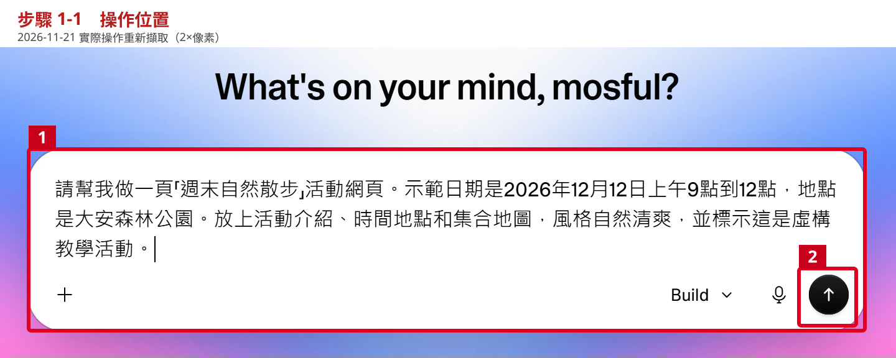
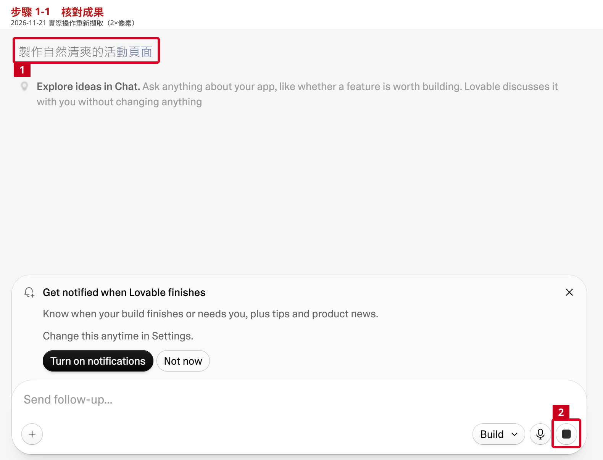
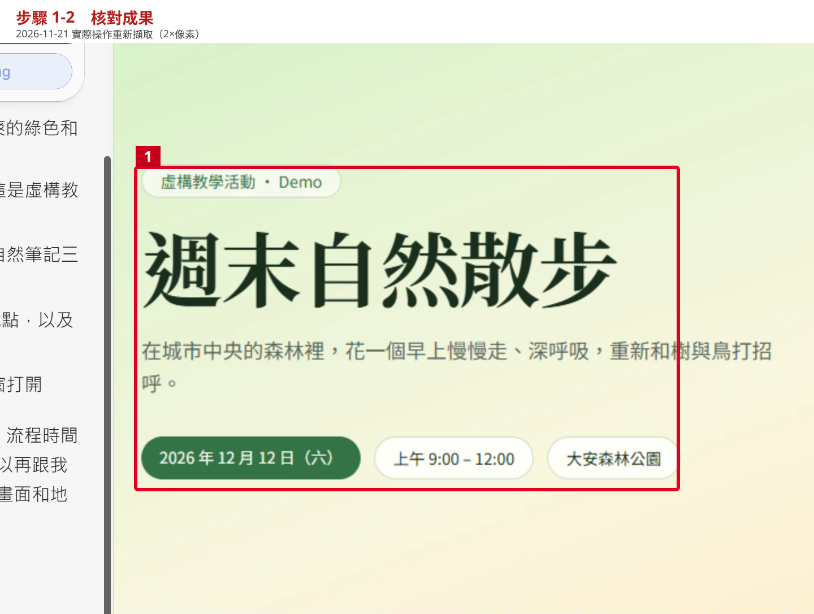
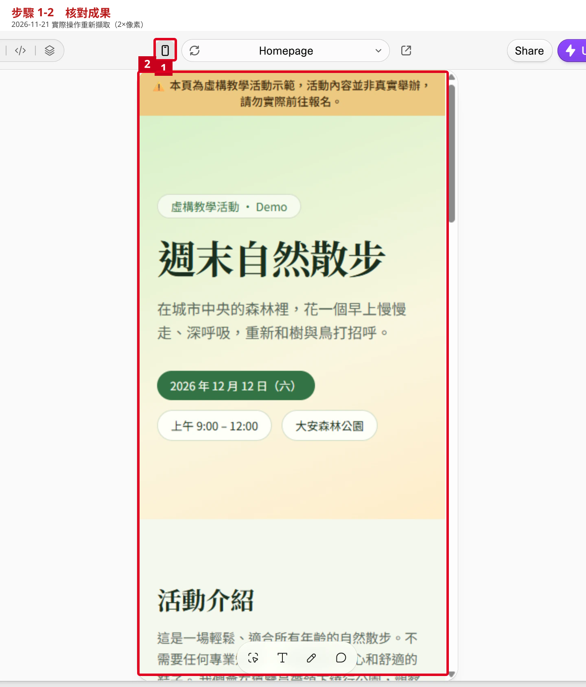
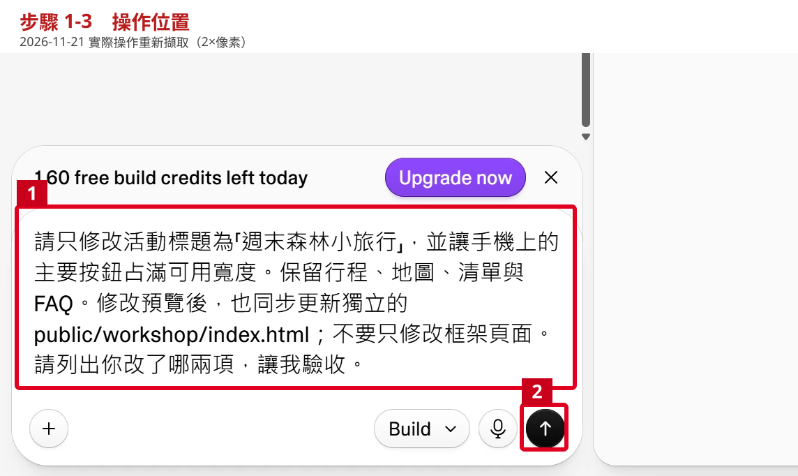
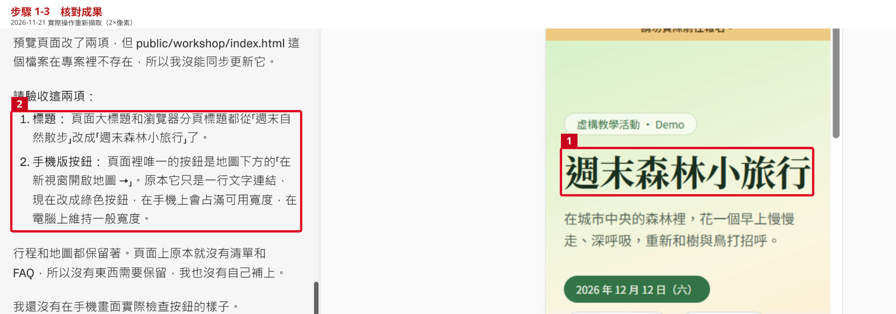
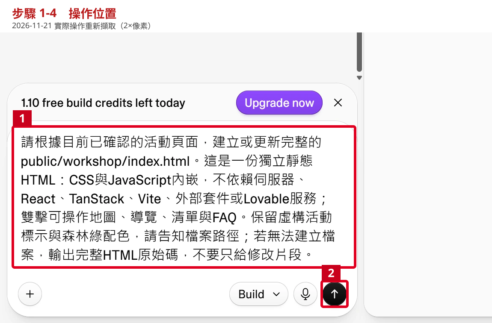
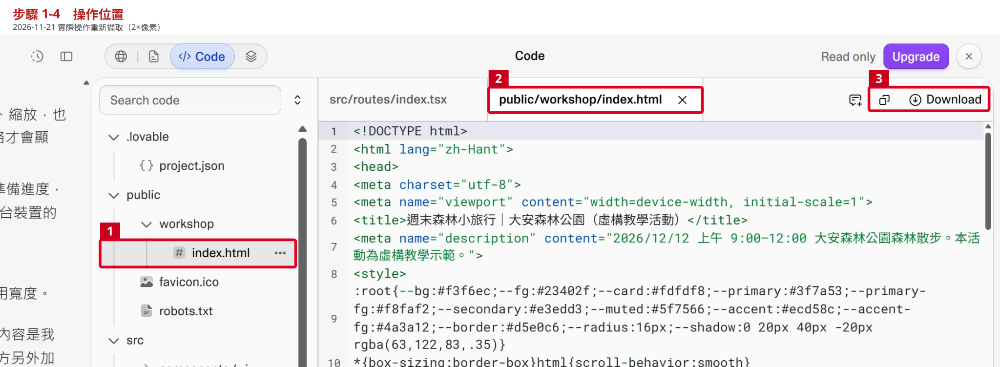
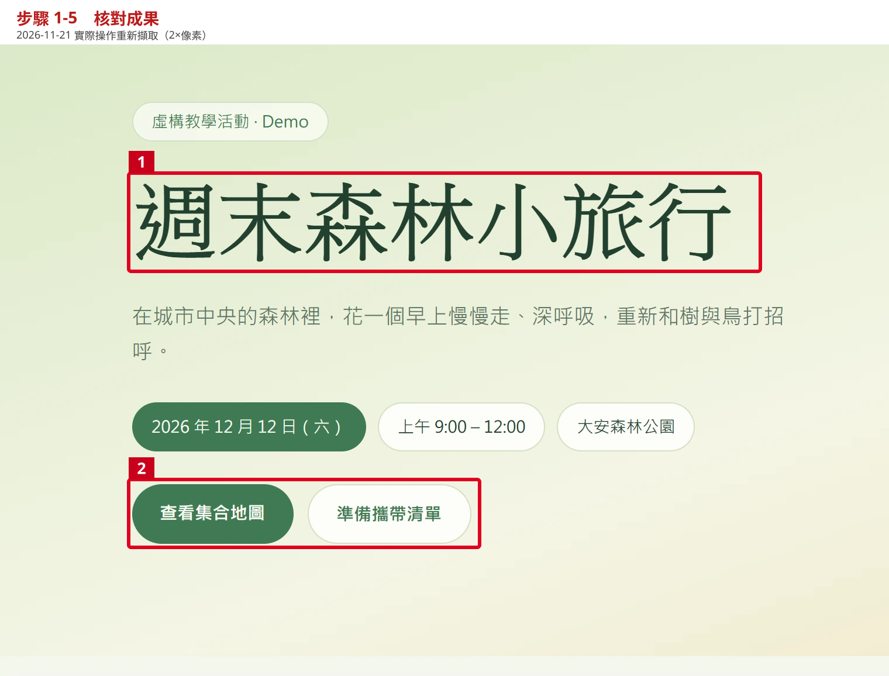
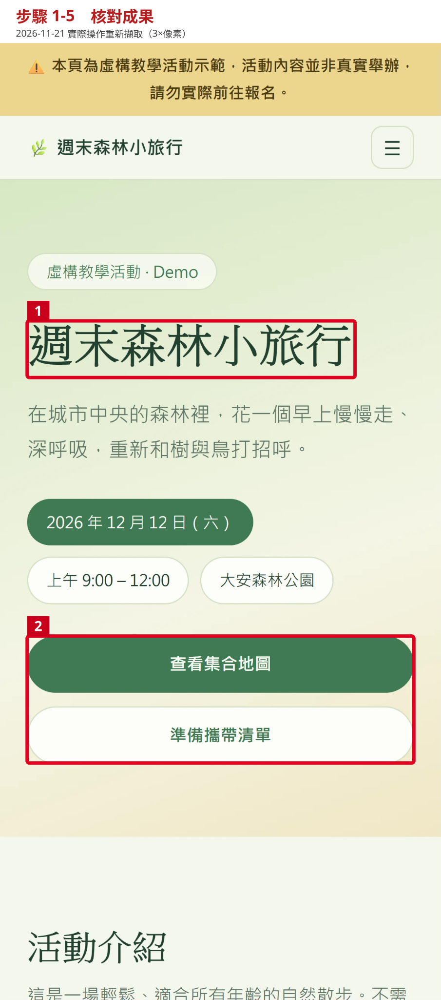

Lovable｜生成與調整
00–25 分鐘
看見第一版、做一次修改，取得可獨立開啟的HTML。
- 開啟已登入的 Lovable
前往 https://lovable.dev/，在首頁的需求輸入區貼上下方「活動頁生成提示詞」，選擇開始建置的按鈕（常見為 Build／送出）。等待第一版；1～2分鐘是體驗目標，實際時間依平台而定。
活動頁生成提示詞
選一段貼給Lovable就能開始，不必先學色碼或程式。第一版確認後，再用下方的獨立HTML匯出提示詞取得可發布檔案。
最快體驗版
請幫我做一頁「週末自然散步」活動網頁。示範日期是2026年12月12日上午9點到12點，地點是大安森林公園。放上活動介紹、時間地點和集合地圖，風格自然清爽，並標示這是虛構教學活動。
資訊清楚版
請做一頁「週末自然散步」活動介紹，讓朋友一眼看懂什麼時候、在哪裡、要帶什麼。示範活動是2026年12月12日上午9點到12點，在大安森林公園。請加上簡單行程、地圖與常見問題，並標示沒有真實招募。
帶清單版
幫我製作一頁虛構的「週末自然散步」活動網頁：2026年12月12日上午9點到12點，大安森林公園。除了時間、地圖和行程，再做一份可以勾選的水壺、鞋子、防曬及雨具清單。畫面請用舒服的森林感。
手機友善版
請做一頁手機也好讀的「週末自然散步」活動網頁。示範日期2026年12月12日，上午9點到12點，地點大安森林公園。字要清楚，集合地圖按鈕要容易點，包含活動介紹、行程和準備事項，並標示為虛構教學示範。
原完整版：包含完整規格
請製作一個繁體中文（台灣用語）的一頁式活動網頁，主題為「週末自然散步」。這是虛構教學活動，請清楚標示「教學示範，沒有真實招募」。 活動資料： - 示範日期：2026/12/12，09:00–12:00。 - 地點：臺北市大安森林公園；這是公開景點的示範，不代表真實集合安排。 - 對象：想在週末輕鬆散步的朋友。 - 行程：09:00集合暖身、09:30自然觀察、11:00休息分享、12:00結束。 - 準備清單：飲用水、好走的鞋子、帽子與防曬、雨具。 - FAQ：下雨怎麼辦、需要裝備嗎、這個頁面會收集個資嗎。 - 主要按鈕：「查看集合地圖」，連到 https://www.google.com/maps/search/?api=1&query=大安森林公園 ，另開分頁並加上 rel="noopener"。 版面與功能： - 使用森林綠 #193f32、霧白 #f1f3ec、淺葉綠 #d9e9a4。 - 手機、平板、桌機依可用寬度重排，字體清楚、沒有橫向溢出。 - 有頁內導覽、活動資訊、行程、可勾選的準備清單與FAQ。 - 清單可勾選並顯示完成數量，使用此瀏覽器的本機儲存保留勾選；按鈕與連結都要能操作，保留鍵盤焦點。 - 不加入登入、資料庫、付款、報名表、平台內建AI、API或金鑰。 先產生可預覽第一版。完成後請另外建立一份 public/workshop/index.html：完整的獨立靜態網頁，CSS與JavaScript全部內嵌，不依賴框架、外部套件、伺服器或Lovable執行環境。讓我下載或從同步至GitHub的檔案中取得後，雙擊就能使用，再交給GitHub Pages發布。請不要把原專案的框架入口檔冒充獨立HTML。若尚未建立此檔，明確告訴我，並提供完整HTML原始碼。
貼上「最快體驗版」提示詞，確認右下為 Build，再按黑色箭頭送出。 步驟 1-1 · 紅框為操作／核對位置 · 點圖滿版檢視 
送出後進入專案；輸入框右下的方塊鈕表示 Lovable 仍在建置。 步驟 1-1 · 紅框為操作／核對位置 · 點圖滿版檢視 - 檢查第一版
在預覽中找到活動名稱、日期、地點及行程。點一次地圖、勾一個清單項目，切換窄版預覽確認手機文字和按鈕。

第一版完成：在右側預覽核對活動名稱、日期與地點。 步驟 1-2 · 紅框為操作／核對位置 · 點圖滿版檢視 
按上方裝置鈕切換成手機預覽，檢查文字與按鈕是否清楚。 步驟 1-2 · 紅框為操作／核對位置 · 點圖滿版檢視 - 送出一次明確修改
貼上「單次修改提示詞」，只改標題和手機按鈕。確認修改真的出現在預覽。
單次修改提示詞
請只修改活動標題為「週末森林小旅行」，並讓手機上的主要按鈕占滿可用寬度。保留行程、地圖、清單與FAQ。修改預覽後，也同步更新獨立的 public/workshop/index.html；不要只修改框架頁面。請列出你改了哪兩項，讓我驗收。
在左下輸入框貼上「單次修改提示詞」後送出。 步驟 1-3 · 紅框為操作／核對位置 · 點圖滿版檢視 
修改後標題變成「週末森林小旅行」，左側列出這次改了哪兩項。 步驟 1-3 · 紅框為操作／核對位置 · 點圖滿版檢視 - 取得獨立靜態檔
確認專案內確實有 public/workshop/index.html。若尚未建立，貼上「獨立HTML匯出提示詞」。原專案同步GitHub後可在該檔案頁點 Raw，或在Lovable的Code開啟檔案後選Copy file content，複製全部內容，用純文字編輯器另存 index.html（UTF-8，避免變成 index.html.txt）；若工具直接提供完整HTML，亦可照此存檔。不要只複製原框架的入口HTML。
獨立HTML匯出提示詞
請根據目前已確認的活動頁面，建立或更新完整的 public/workshop/index.html。這是一份獨立靜態HTML：CSS與JavaScript內嵌，不依賴伺服器、React、TanStack、Vite、外部套件或Lovable服務；雙擊可操作地圖、導覽、清單與FAQ。保留虛構活動標示與森林綠配色，請告知檔案路徑；若無法建立檔案，輸出完整HTML原始碼，不要只給修改片段。
Lovable 回報還沒有 public/workshop/index.html 時，貼上「獨立HTML匯出提示詞」。 步驟 1-4 · 紅框為操作／核對位置 · 點圖滿版檢視 
在 Code 開啟 public/workshop/index.html，用複製鈕或 Download 取得完整檔案。 步驟 1-4 · 紅框為操作／核對位置 · 點圖滿版檢視 - 雙擊驗收
雙擊剛存的 index.html，在本機再次測試地圖、導覽及清單。離開Lovable仍可操作，才是本課可發布的靜態檔。

存成 index.html 後雙擊，在本機瀏覽器仍能看到完整活動頁。 步驟 1-5 · 紅框為操作／核對位置 · 點圖滿版檢視 
同一份檔案的手機寬度：主要按鈕占滿寬度、文字清楚。 步驟 1-5 · 紅框為操作／核對位置 · 點圖滿版檢視


講師提問：Lovable預覽能動，就代表朋友已經能用正式網址看到嗎？